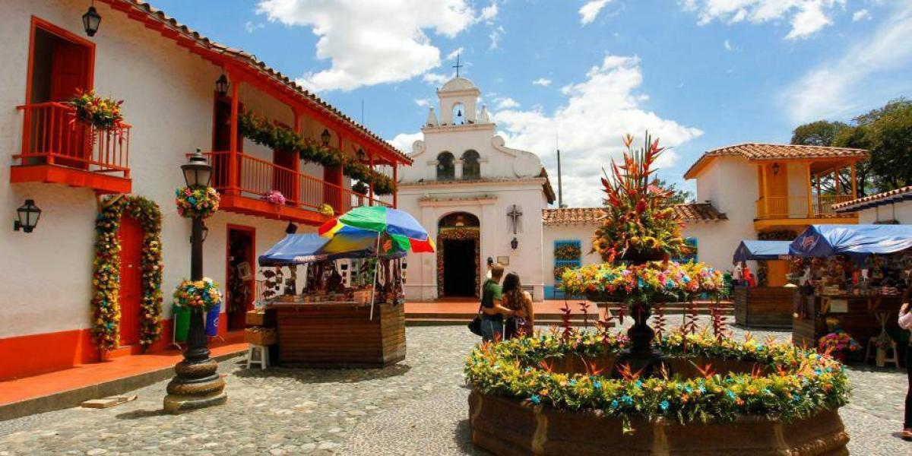
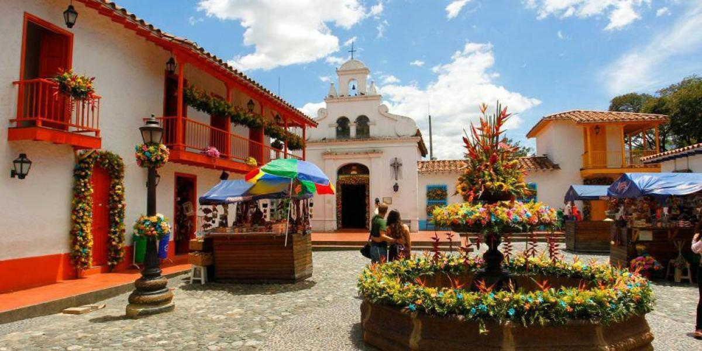

El el plan CITY TOUR conoceras la ciudad paisa con sus iconicos nombres como la tasita de plata, la ciudad de la eterna primavera y entre otros, la vista majestuosa de Medellín y las montañas que recorren el Valle de Aburrá. Tambien caminaremos por la Descubre su historia de transformación social recorriendo el Graffitour y dejándote envolver por los colores de los murales de artistas en su mayoría locales, que han retratado su testimonio de resiliencia a través del arte. Llega a ritmo de break dance al impresionante mi rador que ofrece el Barrio Las Independencias, a través de las primeras esacaleras eléctricas de carácter público y gratuito creadas para facilitar la movilidad de los habitantes del barrio y sorpéndete con los contrastes de colores de las incontables casas que hacen parte del paisaje y que se funden con las imponentes montañas de Medellín. ¡Comienza desde ya a planear tu viaje!
JARDIN antioquia es uno de los lugares mas especiales de colombia Este pueblo patrimonio está ubicado en Antioquia que limita con las regiones de Quindío Valle del Cauca, Risaralda y Caldas, que componen el Paisaje Cultural Cafetero. allí podrás conocer la cultura cafetera y probar una exquisita taza de café colombiano, visitaremos el restaurante las trucheras en donde además de disfrutar de la exquisita comida típica antioqueña, tendrás la oportunidad de entrar en contacto con la naturaleza y sus hermosos paisajes Este pueblito paisa también cuenta con lugares mágicos. Vive un ambiente natural en la Cascada del Amor, pasa una tarde tranquila en el parque El Libertador o planea una tarde de ecoturismo por el Camino de la Herrera. El clima fresco te cautivará por completo y seguramente querrás regresar de nuevo. ¡Comienza desde ya a planear tu viaje!


Cartagena es una ciudad que está ubicada a orillas del Mar Caribe. Sus calles coloridas llenas de encanto la hacen la puerta de entrada a Suramérica. En Colombia, se encuentra al norte del país, y es la capital de la región de Bolívar. ‘La Heroica’, como la llaman, contempla a su alrededor varios archipiélagos e islas que son paraísos para un verdadero descanso Este fantástico destino guarda los secretos de la historia en su ciudad amurallada, en sus balcones y en sus angostos caminos de piedra que sirvieron de inspiración a Gabriel García Márquez, ganador del premio Nobel de Literatura en 1982. Indudablemente, debes conocer el patrimonio arquitectónico y cultural de la ciudad recorriendo su centro histórico, el cual se encuentra rodeado por largos kilómetros de antiguas murallas que conforman la ciudad amurallada, En La Heroica, además de palpar cientos de años de historia en calles empedradas, podrás explorar el impresionante Castillo de San Felipe de Barajas, que data del siglo XVII. ¡Comienza desde ya a planear tu viaje!
El ingreso al valle del Cocora es gratuito. Pueden hacer varias caminatas por el parque. Algunas exigen el servicio de un guía local. Se puede llegar fácilmente hasta a un punto que se llama «la casa de los colibríes El valle de Cocora es un paisaje natural localizado en la cordillera central de los Andes colombianos, específicamente en el departamento del Quindío, en el área de influencia del Parque nacional natural Los Nevados. En el municipio de Salento, al que se llega luego de un viaje de 25 km hacia el norte desde Armenia, se visita el valle del Cocora, donde crece la palma de cera, el árbol nacional, que puede llegar a medir 60 m de altura. Este árbol es esencial para un ave muy vistosa, el loro orejiamarillo. En el valle del Cocora los viajeros pueden andar por un sendero ecológico e incluso cabalgar. ¡Comienza desde ya a planear tu viaje!